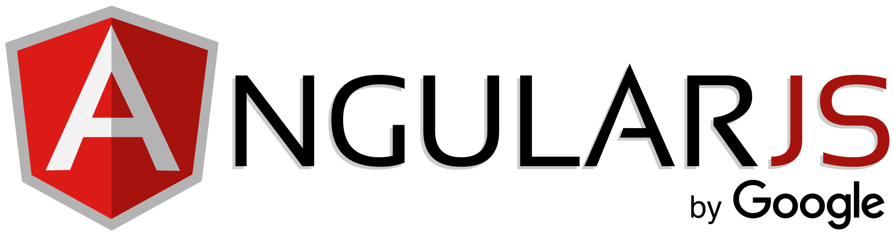

JavaScript-фреймворк з відкритим програмним кодом, який розробляє Google. Призначений для розробки односторінкових додатків, що складаються з одної HTML сторінки
з CSS і JavaScript.Його мета — розширення браузерних застосунків на основі шаблону Модель-вид-контролер (MVC), а також спрощення їх тестування та
розробки.

Основні переваги використання Angular
Декларативний стиль коду
Використання спеціальних директив
Модульність
Простота тестування
Завчасно готові рішення, які спрощують розробку
Директиви, що використовуються в фреймворку
Директивами в Ангулярі називаються додаткові атрибути, що розширюють стандартний HTML-код та містять у собі приставку ng-.
Серед найбільш використовуваних і основних:
ng-app – “обгортає” додаток Angular, розпочинає його.
ng-init – ініціалізує дані програми.
ng-model – вносить додаткові дані в програму шляхом зв’язування даних.
Приклад роботи AngularJS
Введіть своє ім'я:
Ви ввели: {{ firstName }}
Директива ng-app передає інформацію AngularJS, що блок є “обгорткою” додатка AngularJS.
Зв’язування даних
Як Ви помітили, зверху в коді поміщений вираз {{FirstName}}. Він в AngularJS використовується для зв’язування даних. Зв’язування даних використовується для створення “містка” між ng-model та виводом.
Модулі в AngularJS
Формою організації усіх процесів в Angular є модулі. Модуль – це певне середовище для окремої інформації, такої як директиви, контроллери, фільтри тощо. Описується директивою ng-module.
Контроллери в AngularJS
Длиректива ng-controller визначає контроллер додатку. Саме організувавши роботу контроллера ми встановлюємо контроль над даними в програмі.